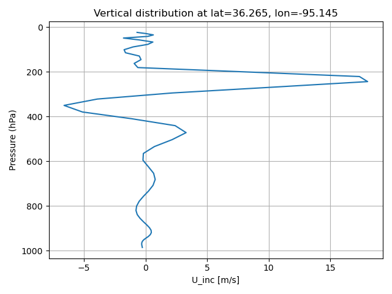
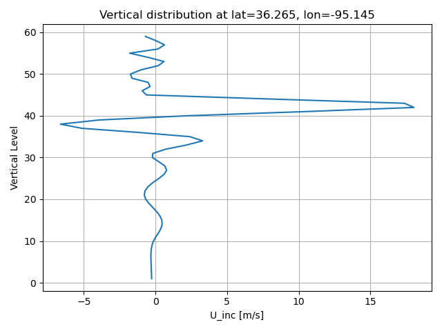

run a script in a notebook to plot analysis increment profile and vertical cross section#
Run scripts/vertical_profile_mpasjedi.py developed by Junjun Hu
Preparation, adding pyDAmonitor_ROOT to sys.path; load modules#
%%time
# autoload external python modules if they changed
%load_ext autoreload
%autoreload 2
import sys, os
pyDAmonitor_ROOT=os.getenv("pyDAmonitor_ROOT")
if pyDAmonitor_ROOT is None:
print("!!! pyDAmonitor_ROOT is NOT set. Run `source ush/load_pyDAmonitor.sh`")
else:
print(f"pyDAmonitor_ROOT={pyDAmonitor_ROOT}\n")
sys.path.insert(0, pyDAmonitor_ROOT)
from DAmonitor.base import load_figs
pyDAmonitor_ROOT=/home/Guoqing.Ge/pyDAmonitor
CPU times: user 177 ms, sys: 188 ms, total: 365 ms
Wall time: 494 ms
Run the vertical_profile_mpasjedi.py script directly in the Notebook#
%%time
%run $pyDAmonitor_ROOT/scripts/vertical_profile_mpasjedi.py
CPU times: user 4.01 s, sys: 3.42 s, total: 7.43 s
Wall time: 7.53 s
load the generate figures (vertical profiles and vertical cross sections)#
load_figs('./U_inc_p.png', 'U_inc_z.png') #, 'U_inc_xp.png', 'U_inc_xz.png', 'U_inc_yp.png', 'U_inc_yp.png', 'U_inc_yz.png' )


cat the content of scripts/vertical_profile_mpasjedi.py#
!cat $pyDAmonitor_ROOT/scripts/vertical_profile_mpasjedi.py
#!/usr/bin/env python
import warnings
import os
from netCDF4 import Dataset
import numpy as np
import matplotlib.pyplot as plt
# import xarray as xr
import colormap
import matplotlib
matplotlib.use('agg')
warnings.filterwarnings('ignore')
pyDAmonitor_ROOT=os.getenv("pyDAmonitor_ROOT")
def plot_inc(var_inc, decimal=3):
max_inc = np.around(np.max(var_inc), decimal)
min_inc = np.around(np.min(var_inc), decimal)
# decide the color contours based on the increment values
clevmax = max((abs(max_inc), abs(min_inc)))
inc = 0.05 * clevmax
clevs = np.arange(-1.0 * clevmax, 1.0 * clevmax + inc, inc)
cm = colormap.diff_colormap(clevs)
return clevs, cm
# plot cross section
def cross_section(latlon, levs, var, clevs, cm, title, xlab, ylab, cblab, invert_y=0):
fig = plt.figure(figsize=(8, 8))
ct = plt.contourf(latlon, levs, var, clevs, cmap=cm, extend='both')
plt.xlabel(xlab, size=14)
plt.ylabel(ylab, size=14)
plt.title(title)
if (invert_y == 1):
plt.gca().invert_yaxis() # optional, depending on your z direction
# Add colorbar
cbar = fig.colorbar(ct, orientation="horizontal", fraction=0.046, pad=0.1)
cbar.set_label(cblab, size=14)
cbar.ax.tick_params(labelsize=10, rotation=30)
plt.grid(True)
plt.tight_layout()
# plt.show()
def get_Index(axis, target, lats, lons, tolerance=0.2):
if (axis == 'latitude'):
value = target # the constant lat value
mask = np.abs(lats - value) < tolerance
sort_idx = np.argsort(lons[mask])
# coord = lons[mask][sort_idx]
else:
value = target # the constant lon value
mask = np.abs(lons - value) < tolerance
sort_idx = np.argsort(lats[mask])
# coord = lats[mask][sort_idx]
return mask, sort_idx
def main():
# janalysis = "/scratch1/BMC/wrfruc/jjhu/rundir/wrkflow-test/Btuning/2024050601_lbc/uv233/singleob_rh4rv0_avgheight_std14/mpasin.nc"
# jbackgrnd = "/scratch1/BMC/wrfruc/jjhu/rundir/wrkflow-test/Btuning/2024050601_tuneB/bkg/mpasout.2024-05-06_01.00.00.nc"
# jstatic = "/scratch1/BMC/wrfruc/jjhu/rundir/wrkflow-test/Btuning/2024050601_tuneB/invariant.nc"
janalysis = f"{pyDAmonitor_ROOT}/data/mpasjedi/ana.nc"
jbackgrnd = f"{pyDAmonitor_ROOT}/data/mpasjedi/bkg.nc"
jstatic = f"{pyDAmonitor_ROOT}/data/mpasjedi/invariant.nc"
figdir = "./"
# varible to plot
variable = "U"
target_lat, target_lon = 36.265, -95.145
# Open NETCDF4 dataset for reading
nc_a = Dataset(janalysis, mode='r')
nc_b = Dataset(jbackgrnd, mode='r')
f_latlon = Dataset(jstatic, "r")
# read lat,lon information
lats = np.array(f_latlon.variables['latCell'][:]) * 180.0 / np.pi # Latitude of cells, rad
lons0 = np.array(f_latlon.variables['lonCell'][:]) * 180.0 / np.pi # Longitude of cells, rad
lons = np.where(lons0 > 180.0, lons0 - 360.0, lons0)
# z = f_latlon.variables['zgrid'][:] # Geometric height of layer interfaces, m MSL
# Grab variables
if variable == "T": # Convert to temperature
unit = "K"
jedi_a = nc_a.variables["theta"][0, :, :].astype(np.float64) # (Time, nCells, nVertLevels)
jedi_b = nc_b.variables["theta"][0, :, :].astype(np.float64)
pres_a = (nc_a.variables['pressure_p'][0, :, :] + nc_b['pressure_base'][0, :, :])/100.0
pres_b = (nc_b.variables['pressure_p'][0, :, :] + nc_b['pressure_base'][0, :, :])/100.0
dividend_a = (1000.0/pres_a)**(0.286)
dividend_b = (1000.0/pres_b)**(0.286)
jedi_a = jedi_a / dividend_a
jedi_b = jedi_b / dividend_b
if variable == "Q":
unit = "mg/kg"
jedi_a = nc_a.variables['qv'][0, :, :] * 1000000.0
jedi_b = nc_b.variables['qv'][0, :, :] * 1000000.0
if variable == "U":
unit = "m/s"
jedi_a = nc_a.variables['uReconstructZonal'][0, :, :]
jedi_b = nc_b.variables['uReconstructZonal'][0, :, :]
if variable == "V":
unit = "m/s"
jedi_a = nc_a.variables['uReconstructMeridional'][0, :, :]
jedi_b = nc_b.variables['uReconstructMeridional'][0, :, :]
pres_b = (nc_b.variables['pressure_p'][0, :, :] + nc_b['pressure_base'][0, :, :])/100.0 # pressure profile
vlevs = np.arange(1, jedi_a.shape[1]+1) # model vertical levels
jedi_inc = jedi_a - jedi_b # the increment
# ------------------- the vertical profile begin -----------------
# The nearest grid cell to the desired lat/lon
dist = np.sqrt((lats - target_lat)**2 + (lons - target_lon)**2)
idx = np.argmin(dist)
# get 1-d vertical profile at the target lat/lon
jedi_inc_z = jedi_inc[idx, :]
pres_z = pres_b[idx, :]
# plot against pressures
plt.plot(jedi_inc_z, pres_z)
xlab = f"{variable}_inc [{unit}]"
plt.xlabel(xlab)
plt.ylabel("Pressure (hPa)")
plt.title(f"Vertical distribution at lat={target_lat}, lon={target_lon}")
plt.gca().invert_yaxis() # optional, depending on your z direction
plt.grid()
plt.tight_layout()
plt.savefig(f'{figdir}/{variable}_inc_p.png')
plt.close()
# plot against model leves
plt.plot(jedi_inc_z, vlevs)
plt.xlabel(xlab)
plt.ylabel("Vertical Level")
plt.title(f"Vertical distribution at lat={target_lat}, lon={target_lon}")
plt.grid()
plt.tight_layout()
plt.savefig(f'{figdir}/{variable}_inc_z.png')
plt.close()
# ------------------- the vertical profile end -----------------
# ------------------ longitude-pressure(/levels) cross section begin -----------------
# transpose
jedi_inc_T = jedi_inc.T
pres_T = pres_b.T # pressure levels
clevs, cm = plot_inc(jedi_inc)
axis = 'latitude'
mask1, sort_idx1 = get_Index(axis, target_lat, lats, lons)
latlon = lons[mask1][sort_idx1]
jedi_inc_xz = jedi_inc_T[:, mask1][:, sort_idx1] # shape: (nLevels, nCrossPoints)
pres_xz = pres_T[:, mask1][:, sort_idx1] # height (same shape)
title = f"X-Z Cross section of {variable}_inc [{unit}] at lat={target_lat}"
xlab = "Longitudes"
cblab = f"{variable}_inc [{unit}]"
vaxis = vlevs # against vertical levels
ylab = "Vertical Level"
cross_section(latlon, vaxis, jedi_inc_xz, clevs, cm, title, xlab, ylab, cblab, 0)
plt.tight_layout()
plt.savefig(f'{figdir}/{variable}_inc_xz.png')
plt.close()
ylab = "Pressure (hPa)"
vaxis = pres_xz.mean(axis=1)
cross_section(latlon, vaxis, jedi_inc_xz, clevs, cm, title, xlab, ylab, cblab, 1)
plt.tight_layout()
plt.savefig(f'{figdir}/{variable}_inc_xp.png')
plt.close()
# ------------------ longitude-pressure(/levels) cross section end -----------------
# ------------------ latitude-pressure(/levels) cross section begin -----------------
# make latitude-pressure(/levels) cross section
axis = 'longitude'
mask2, sort_idx2 = get_Index(axis, target_lon, lats, lons)
jedi_inc_yz = jedi_inc_T[:, mask2][:, sort_idx2] # shape: (nLevels, nCrossPoints)
pres_yz = pres_T[:, mask2][:, sort_idx2] # height (same shape)
latlon = lats[mask2][sort_idx2]
title = f"Y-Z Cross section of {variable}_inc [{unit}] at lat={target_lat}"
xlab = "Latitudes"
cblab = f"{variable}_inc [{unit}]"
vaxis = vlevs # against vertical levels
ylab = "Vertical Level"
cross_section(latlon, vaxis, jedi_inc_yz, clevs, cm, title, xlab, ylab, cblab, 0)
plt.tight_layout()
plt.savefig(f'{figdir}/{variable}_inc_yz.png')
plt.close()
ylab = "Pressure (hPa)"
vaxis = pres_yz.mean(axis=1)
cross_section(latlon, vaxis, jedi_inc_yz, clevs, cm, title, xlab, ylab, cblab, 1)
plt.tight_layout()
plt.savefig(f'{figdir}/{variable}_inc_yp.png')
plt.close()
# ------------------ latitude-pressure(/levels) cross section end -----------------
if __name__ == '__main__':
main()